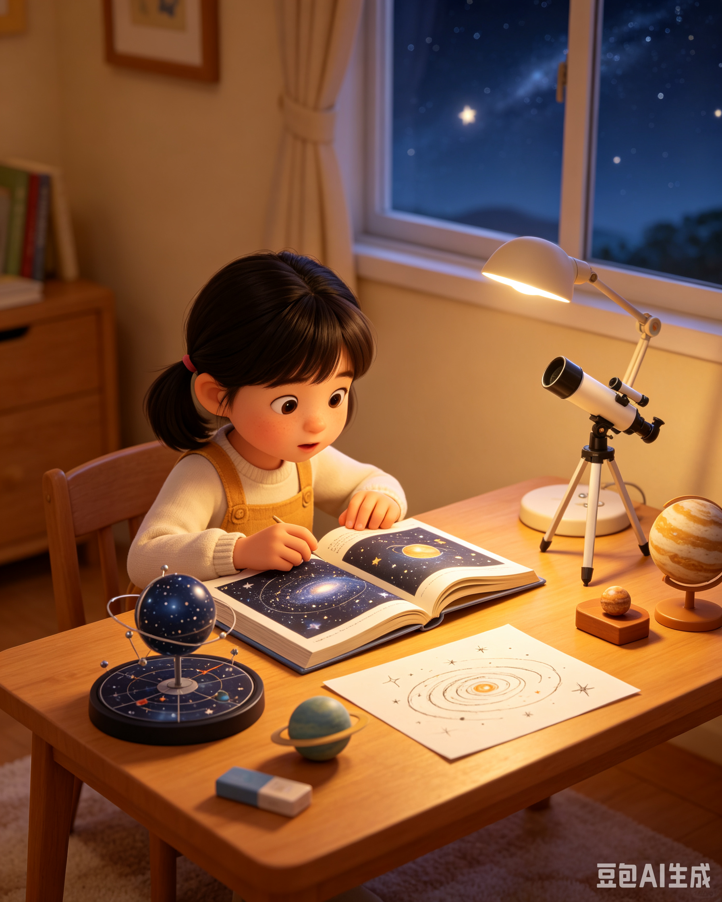

全生命周期时间线
—— 原著纪年精准复刻 · 每一个节点都凝聚着文明的重量 ——
1943年
叶文洁出生于高级知识分子家庭，父亲叶哲泰为著名物理学家，母亲绍琳为天体物理学者，天生与科学结下不解之缘

1967年 · 核心创伤
文化大革命 爆发，父亲叶哲泰因学术观点遭受批斗，被红卫兵活活打死。母亲绍琳为自保急于划清界限、揭发丈夫。叶文洁亲眼目睹父亲惨死、母亲背叛，对人类社会产生 刻骨铭心的绝望，这是其一生命运的根源转折点
1969年
被分派至内蒙古生产建设兵团，在极端艰苦环境中度过三年，亲眼目睹人性的自私、残忍与蒙昧，对人类文明的绝望进一步加深
1971年 · 命运转折
因天体物理学背景，被秘密征召至大兴安岭 红岸基地，参与代号"红岸工程"的绝密外星文明搜索计划。这是她一生宿命的真正起点

1971-1979年
在红岸基地潜心研究，排除众议发现了太阳可以作为超级天线放大信号的原理，独立完成重大的技术突破。期间与同事杨卫宁相识，后结为夫妻
1979年 · 终极抉择
利用太阳放大功能，向宇宙深处发出 人类文明的第一封问候信，暴露了地球文明的坐标。信号被 三体文明 截获，从此开启了两个文明跨越数百年的生死博弈——人类的末日，自此开始

1979年-1980年代初
收到三体文明回信，读到"不要回答！不要回答！！不要回答！！！"的警告。但在对人类彻底绝望的心态下，再次发送信息确认了地球坐标，欢迎三体文明前来"改造"人类世界
1980年代 · ETO创立
利用杨卫宁之死（事件为意外，但叶文洁负有间接责任）和自身在天体物理学界的资源，秘密创立 地球三体运动（ETO），聚集了对人类文明失望的理想主义者，成为ETO的绝对统帅
1980年代-2007年
暗中经营ETO多年，发展了三体降临派、拯救派、幸存派三大分支，构建了世界范围的秘密组织网络。同时淡出公众视野，表面作为清华大学退休教授安度晚年
危机纪元3年 · 最后一课
在杨冬墓前偶遇罗辑，面对这个唯一让她抱有希望的学生，讲述了 宇宙社会学两大公理：生存是文明的第一需要；文明不断增长和扩张，但宇宙中的物质总量保持不变。留下关于猜疑链、技术爆炸的伏笔，这是她对人类文明最后的馈赠，也成为罗辑推导黑暗森林法则的关键钥匙

危机纪元3年 · 被捕与终结
ETO组织被破获，叶文洁被捕。在审讯中平静坦诚了自己的全部行为，不愿反抗、没有辩解。人类的审判者，坦然接受了自己的审判。后在拘留所中因器官衰竭去世（在等待女儿杨冬的遗体告别时）
危机纪元8年 · 逝世
叶文洁在拘留所中去世，终其一生，她既是 人类文明的毁灭者，也是 宇宙真相的探索者，身后留下的宇宙社会学遗训，最终成为罗辑拯救人类文明的理论基石